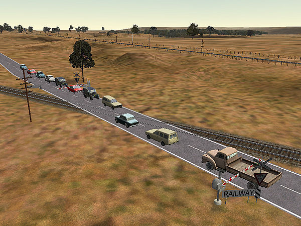
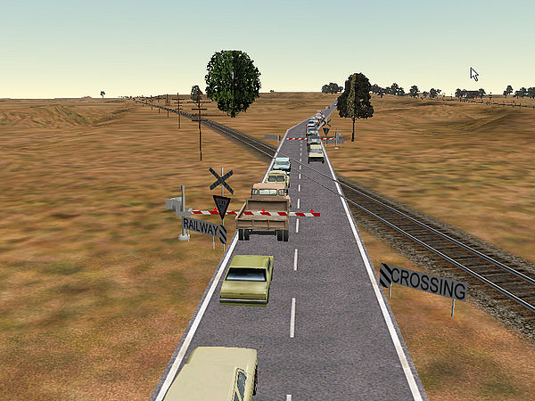
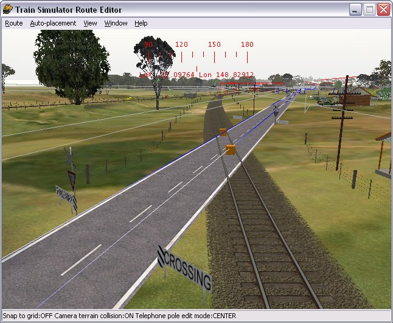
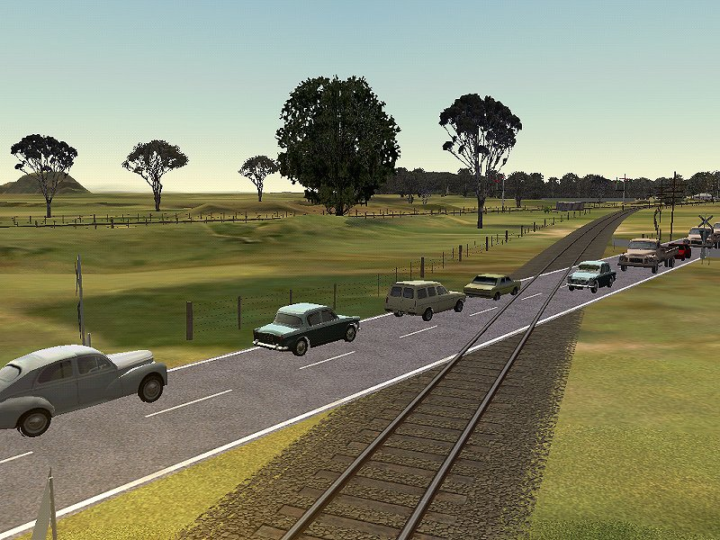
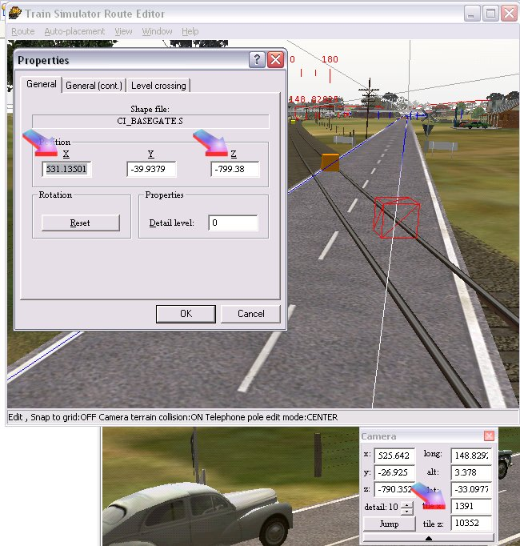
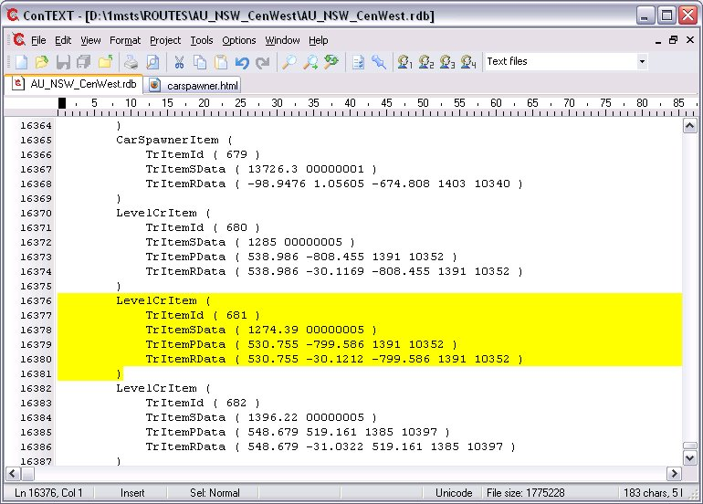
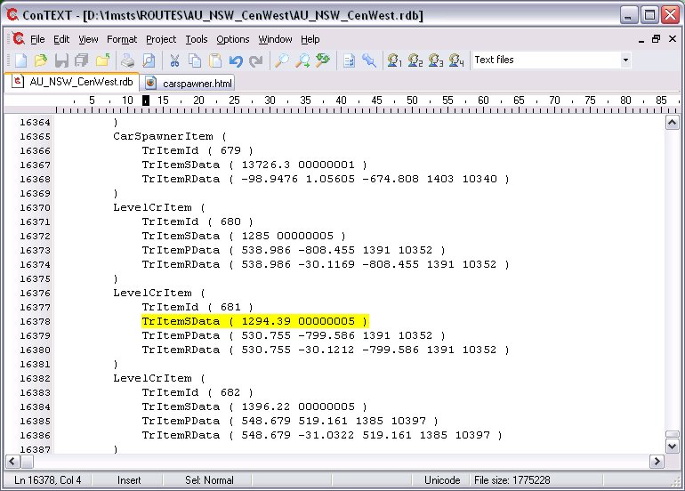
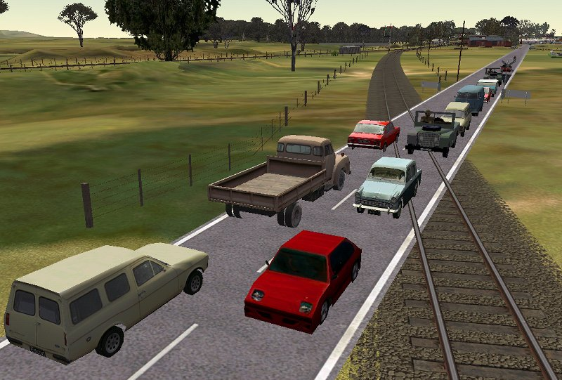
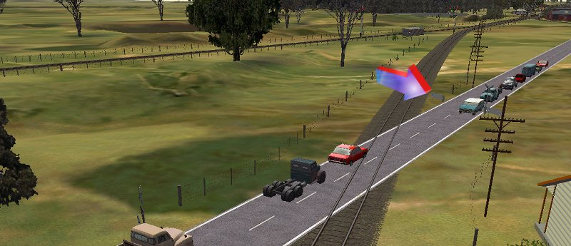
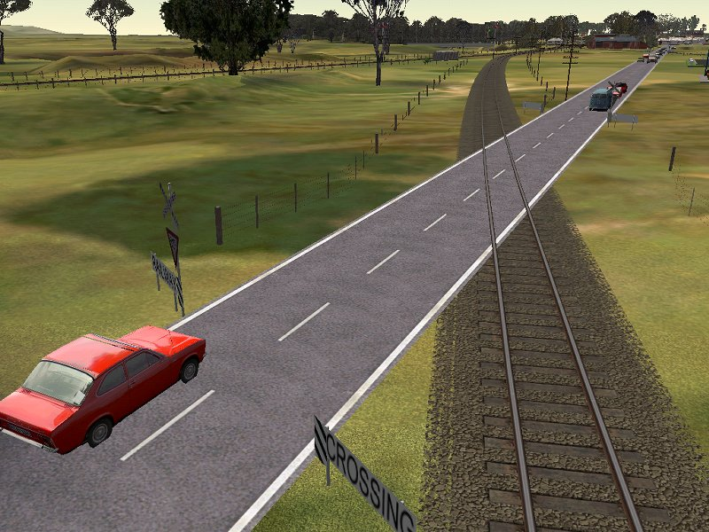

The problem is that the cars stop their separation distance away from the track (or more precisely away from the orange cube on the tracks that marks the presence of a level crossing): like this.......


Jeffrey Kraus-Yao has been studying the structure of the track and road database files and discovered a simple solution to the problem of keeping cars back from an angled level crossing. This solution replaces the previous way of treating this problem first presented by Bruce Bridges in his Conrail Indy route v.1. You can find Bruce's solution by reading Carspawners and Angled Level Crossings - The Old Way.
Place your level crossing as you normally do in Route Editor (RE). In this image, I've placed the level crossing, but have depressed the booms below ground level as this crossing didn't have them:

This is what this crossing looks like in the sim:

However, I want the cars to stop at the level crossing signs.
When you've placed the level crossing, press [F2], click on the orange box - it turns wireframe, then right-click and record the "x" and "z" dimensions as well as the tile you're on (see arrows in image below):

Do this for both orange boxes. Then save your changes and quit Route Editor.
Open the route's .RDB file and search for your placed level crossing. In the following examples, I'll show you only one correction, but you'll obviously have to do it for both "orange boxes". Here I've searched for and found LevelCrItem located on the correct tile (1391+10352) and at the correct location (x=530.755, z=799.586); you can ignore the slight differences from the locations you've recorded (eg 799.38 in the RE and 799.58 in the RDB is a 20cm/8" variation - hardly significant).

You can alter the distance the cars stop from the track (orange box, actually) by adjusting the first figure in the TrItemSData line: in this example
TrItemSData ( 1274.39 00000005 )
Open the sim, start an "explore" that takes you to the crossing: you may want to make a small path that starts at/near the crossing to speed up this process as the changes you make to the RDB are reflected as soon as you restart the activity. So adjust, start the explore, watch the cars, adjust/save the RDB, quit the explore and immediately restart to see the effect of the changes (it's actually quicker to do than it was for me to type this paragraph).
First, I added 20m to the number, making it 1294.39, thus.....

....saved the RDB, then tried out the crossing. Oops! The red car (coming towards the camera) is the lead car and has now stopped over the crossing.

Well, let's go the other way. I subtracted 20m from the original 1274.39, making the value 1254.39, save the RDB and looked at the result in the sim. Much, much better - we're very close now.

The final adjustment actually turned out to be 1250m. I then did a similar series of adjustments to the TrItemSData in the LevelCrItem for the other side and this was the final result:

This method is so much easier and quicker than placing extra tracks in parallel, plus there are no "issues" with extra bits of track and possible track database problems. It also means that crossings of up to four tracks wide can be adjusted this way (level crossing items only stretch across a maximum of four tracks). Having performed both methods for these tutorials, this new method is 20-30 minutes faster per crossing than the old extra track method. Thanks to Jeff Kraus-Yao for discovering this RDB tweak.